Что приготовить из мяса
Говядина, свинина и баранина: тушёное, жареное и в духовке. 70 рецептов: у каждого время, калории и БЖУ на порцию, пошаговые инструкции и список покупок
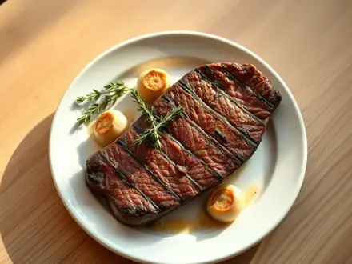
Говяжий стейк на сковороде20 мин · 504 ккал · Б 38 г · Второе блюдо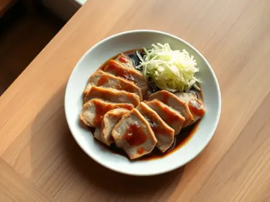
Свинина с имбирём по-японски (сёгаяки)20 мин · 585 ккал · Б 30 г · Второе блюдо- Свинина в медово-горчичном соусе на сковороде20 мин · 691 ккал · Б 35 г · Второе блюдо
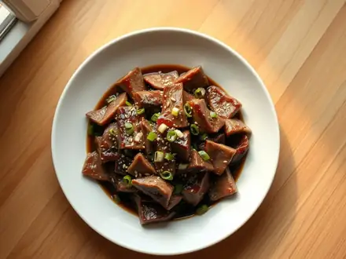
Говядина терияки с кунжутом20 мин · 514 ккал · Б 36 г · Второе блюдо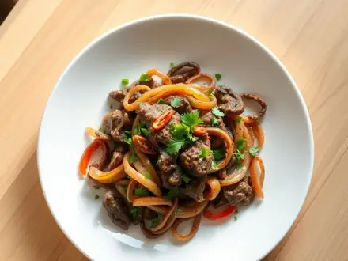
Баранина с луком и зирой на сковороде25 мин · 487 ккал · Б 27 г · Второе блюдо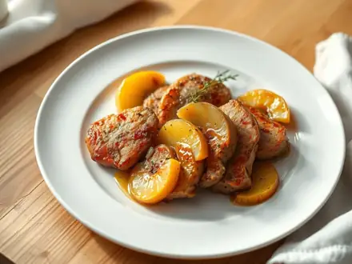
Свинина с яблоками на сковороде25 мин · 572 ккал · Б 25 г · Второе блюдо Тёплый салат с говядиной по-тайски25 мин · 413 ккал · Б 32 г · Салат
Тёплый салат с говядиной по-тайски25 мин · 413 ккал · Б 32 г · Салат- Шницель из свинины в панировке25 мин · 705 ккал · Б 32 г · Второе блюдо
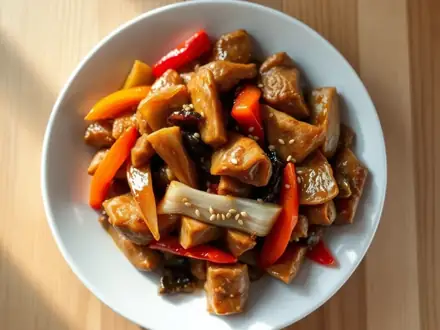
Свинина с болгарским перцем в соевом соусе25 мин · 667 ккал · Б 32 г · Второе блюдо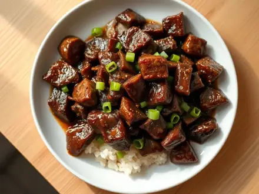
Говядина по-монгольски с зелёным луком25 мин · 640 ккал · Б 36 г · Второе блюдо- Свиные отбивные в горчично-сливочном соусе25 мин · 702 ккал · Б 31 г · Второе блюдо
 Каре ягнёнка на сковороде с чесноком25 мин · 682 ккал · Б 40 г · Второе блюдо
Каре ягнёнка на сковороде с чесноком25 мин · 682 ккал · Б 40 г · Второе блюдо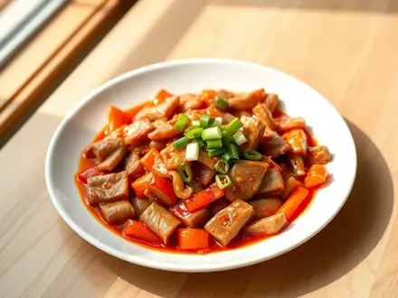
Острая свинина по-корейски (чеюк покым)25 мин · 720 ккал · Б 35 г · Второе блюдо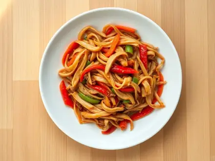
Свинина юйсян с морковью по-китайски25 мин · 641 ккал · Б 27 г · Второе блюдо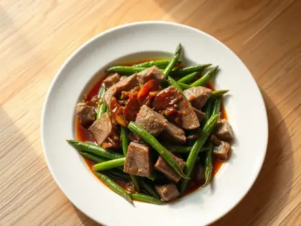
Говядина со стручковой фасолью по-китайски25 мин · 500 ккал · Б 33 г · Второе блюдо- Ромштекс из говядины25 мин · 672 ккал · Б 40 г · Второе блюдо
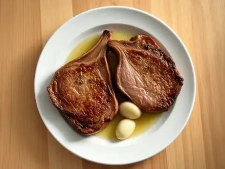
Стейк из свиной шеи на сковороде25 мин · 629 ккал · Б 32 г · Второе блюдо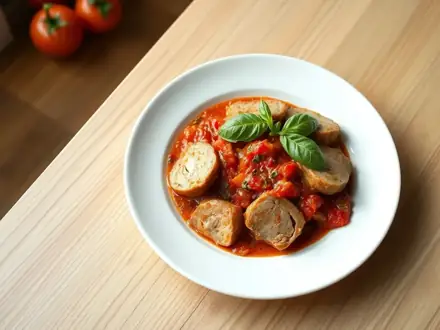
Свинина алла пиццайола в томатном соусе25 мин · 641 ккал · Б 31 г · Второе блюдо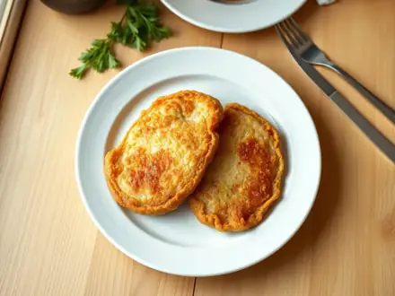
Свиные отбивные в кляре30 мин · 590 ккал · Б 29 г · Второе блюдо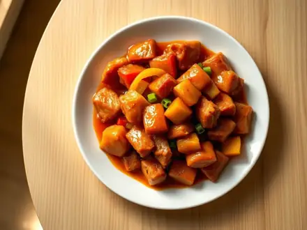
Свинина в кисло-сладком соусе30 мин · 689 ккал · Б 29 г · Второе блюдо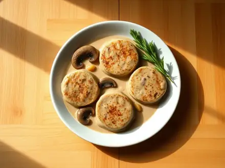
Свиные медальоны в сливочно-грибном соусе30 мин · 704 ккал · Б 33 г · Второе блюдо Кордон блю из свинины30 мин · 771 ккал · Б 39 г · Второе блюдо
Кордон блю из свинины30 мин · 771 ккал · Б 39 г · Второе блюдо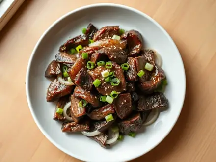
Пулькоги из говядины30 мин · 465 ккал · Б 34 г · Второе блюдо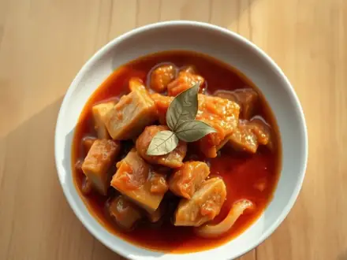
Поджарка из свинины с луком30 мин · 572 ккал · Б 28 г · Второе блюдо Сувлаки из свинины на сковороде30 мин · 535 ккал · Б 27 г · Второе блюдо
Сувлаки из свинины на сковороде30 мин · 535 ккал · Б 27 г · Второе блюдо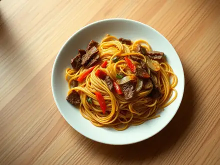
Яичная лапша с говядиной и овощами30 мин · 621 ккал · Б 33 г · Второе блюдо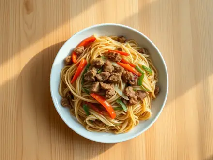
Рисовая лапша со свининой и овощами30 мин · 605 ккал · Б 20 г · Второе блюдо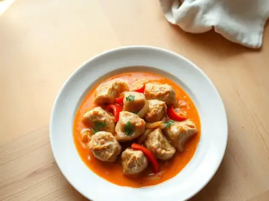
Паприкаш из свинины по-венгерски30 мин · 625 ккал · Б 28 г · Второе блюдо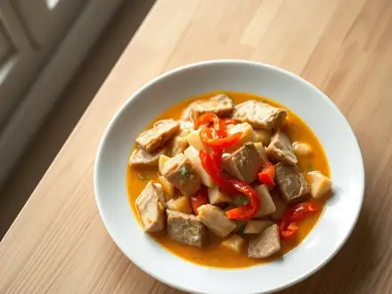
Свинина в кокосовом карри30 мин · 712 ккал · Б 26 г · Второе блюдо Шашлык из свинины на сковороде30 мин · 553 ккал · Б 28 г · Второе блюдо
Шашлык из свинины на сковороде30 мин · 553 ккал · Б 28 г · Второе блюдо Садж из баранины с овощами на сковороде30 мин · 530 ккал · Б 27 г · Второе блюдо
Садж из баранины с овощами на сковороде30 мин · 530 ккал · Б 27 г · Второе блюдо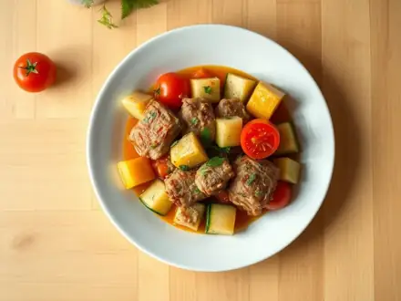
Свинина с кабачками и помидорами на сковороде30 мин · 478 ккал · Б 23 г · Второе блюдо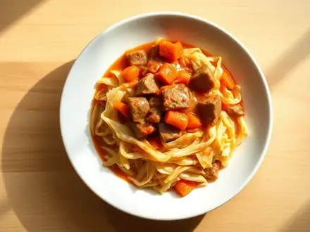
Капуста тушёная со свининой30 мин · 393 ккал · Б 20 г · Второе блюдо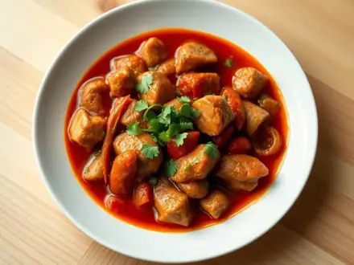
Чашушули из свинины по-грузински30 мин · 542 ккал · Б 28 г · Второе блюдо Свинина с черносливом на сковороде30 мин · 571 ккал · Б 26 г · Второе блюдо
Свинина с черносливом на сковороде30 мин · 571 ккал · Б 26 г · Второе блюдо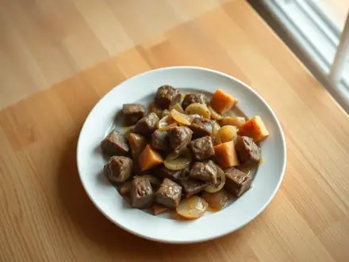
Куырдак из баранины с печенью30 мин · 459 ккал · Б 32 г · Второе блюдо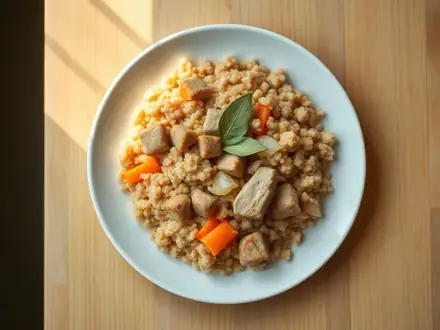
Гречка по-купечески со свининой на сковороде30 мин · 547 ккал · Б 25 г · Второе блюдо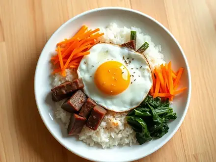
Пибимпап - рис с говядиной, овощами и яйцом по-корейски30 мин · 714 ккал · Б 34 г · Второе блюдо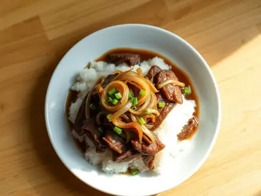
Гюдон - рис с говядиной и луком по-японски30 мин · 570 ккал · Б 31 г · Второе блюдо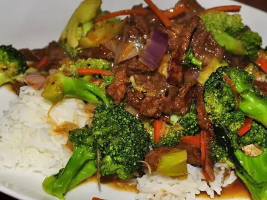
Говядина с брокколи35 мин · 466 ккал · Б 34 г · Второе блюдо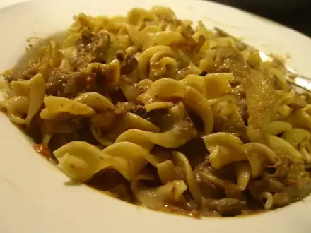
Бефстроганов60 мин · 487 ккал · Б 31 г · Второе блюдо Самса из слоёного теста60 мин · 478 ккал · Б 17 г · Выпечка
Самса из слоёного теста60 мин · 478 ккал · Б 17 г · Выпечка Мясо по-французски60 мин · 615 ккал · Б 31 г · Второе блюдо
Мясо по-французски60 мин · 615 ккал · Б 31 г · Второе блюдо Лагман75 мин · 798 ккал · Б 37 г · Второе блюдо
Лагман75 мин · 798 ккал · Б 37 г · Второе блюдо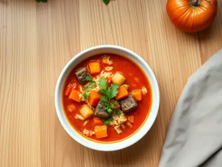
Мастава90 мин · 340 ккал · Б 16 г · Суп Жаркое со свининой в горшочках100 мин · 533 ккал · Б 24 г · Второе блюдо
Жаркое со свининой в горшочках100 мин · 533 ккал · Б 24 г · Второе блюдо Эчпочмак100 мин · 721 ккал · Б 27 г · Выпечка
Эчпочмак100 мин · 721 ккал · Б 27 г · Выпечка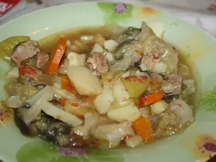
Азу по-татарски100 мин · 574 ккал · Б 33 г · Второе блюдо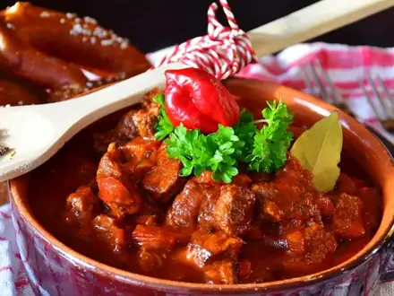
Гуляш из говядины110 мин · 386 ккал · Б 28 г · Второе блюдо Долма в капустных листьях110 мин · 417 ккал · Б 24 г · Второе блюдо
Долма в капустных листьях110 мин · 417 ккал · Б 24 г · Второе блюдо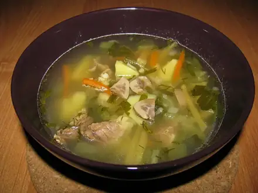
Рассольник120 мин · 304 ккал · Б 19 г · Суп Солянка мясная120 мин · 401 ккал · Б 22 г · Суп
Солянка мясная120 мин · 401 ккал · Б 22 г · Суп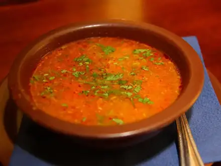
Суп харчо120 мин · 345 ккал · Б 23 г · Суп Чанахи в горшочках120 мин · 499 ккал · Б 30 г · Второе блюдо
Чанахи в горшочках120 мин · 499 ккал · Б 30 г · Второе блюдо Манты с бараниной120 мин · 651 ккал · Б 29 г · Второе блюдо
Манты с бараниной120 мин · 651 ккал · Б 29 г · Второе блюдо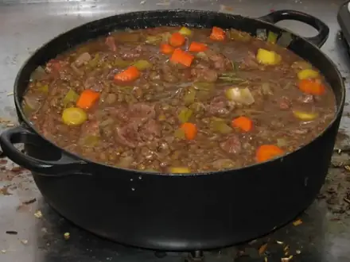
Чечевичная похлёбка с бараниной120 мин · 336 ккал · Б 23 г · Суп Гуляш-суп по-венгерски120 мин · 341 ккал · Б 22 г · Суп
Гуляш-суп по-венгерски120 мин · 341 ккал · Б 22 г · Суп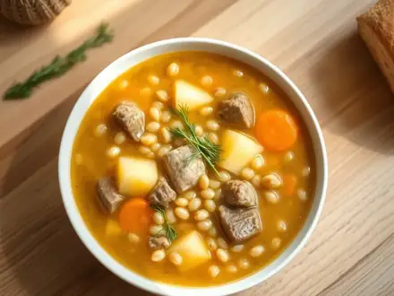
Суп перловый с говядиной120 мин · 252 ккал · Б 19 г · Суп Плов с говядиной130 мин · 880 ккал · Б 33 г · Второе блюдо
Плов с говядиной130 мин · 880 ккал · Б 33 г · Второе блюдо Кюфта-бозбаш130 мин · 366 ккал · Б 21 г · Суп
Кюфта-бозбаш130 мин · 366 ккал · Б 21 г · Суп Говядина тушёная с фасолью130 мин · 392 ккал · Б 31 г · Второе блюдо
Говядина тушёная с фасолью130 мин · 392 ккал · Б 31 г · Второе блюдо Салат «Мужской каприз» с говядиной и маринованным луком130 мин · 398 ккал · Б 23 г · Салат
Салат «Мужской каприз» с говядиной и маринованным луком130 мин · 398 ккал · Б 23 г · Салат Борщ150 мин · 349 ккал · Б 23 г · Суп
Борщ150 мин · 349 ккал · Б 23 г · Суп Шурпа из баранины150 мин · 462 ккал · Б 30 г · Суп
Шурпа из баранины150 мин · 462 ккал · Б 30 г · Суп Плов узбекский с бараниной150 мин · 996 ккал · Б 31 г · Второе блюдо
Плов узбекский с бараниной150 мин · 996 ккал · Б 31 г · Второе блюдо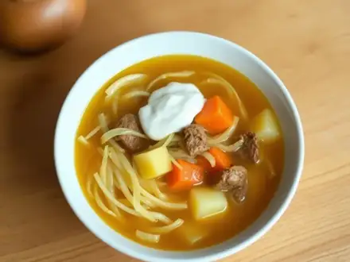
Щи из квашеной капусты с говядиной150 мин · 265 ккал · Б 19 г · Суп- Фо бо с говядиной150 мин · 415 ккал · Б 28 г · Суп
 Бешбармак210 мин · 796 ккал · Б 49 г · Второе блюдо
Бешбармак210 мин · 796 ккал · Б 49 г · Второе блюдо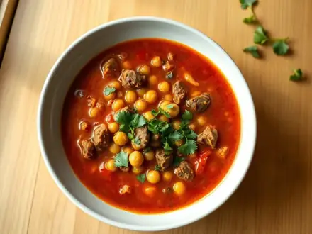
Харира: марокканский суп с нутом и чечевицей600 мин · 270 ккал · Б 16 г · Суп- Мачанка с блинами90 мин · 905 ккал · Б 35 г · Второе блюдо
Другие подборки
- Что приготовить из курицы
- Что приготовить из фарша
- Что приготовить из рыбы
- Что приготовить из картошки
- Что приготовить из яиц
- Что приготовить из творога
- Что приготовить из кабачков
- Что приготовить из капусты
- Что приготовить из грибов
- Что приготовить из риса
- Что приготовить из макарон
- Что приготовить из гречки
- Быстрый ужин за 30 минут
- Быстрый завтрак за 20 минут
- Что приготовить на скорую руку
- ПП-рецепты: лёгкие блюда до 400 ккал
- Белковые блюда: от 25 г белка на порцию
- Дешёвые рецепты из простых продуктов
- Что приготовить ребёнку
- Постные блюда
- Блюда на пару
- Что приготовить в духовке
- Простые супы
- Простые салаты
- Выпечка и десерты
- Блюда на праздничный стол
- Что приготовить из остатков